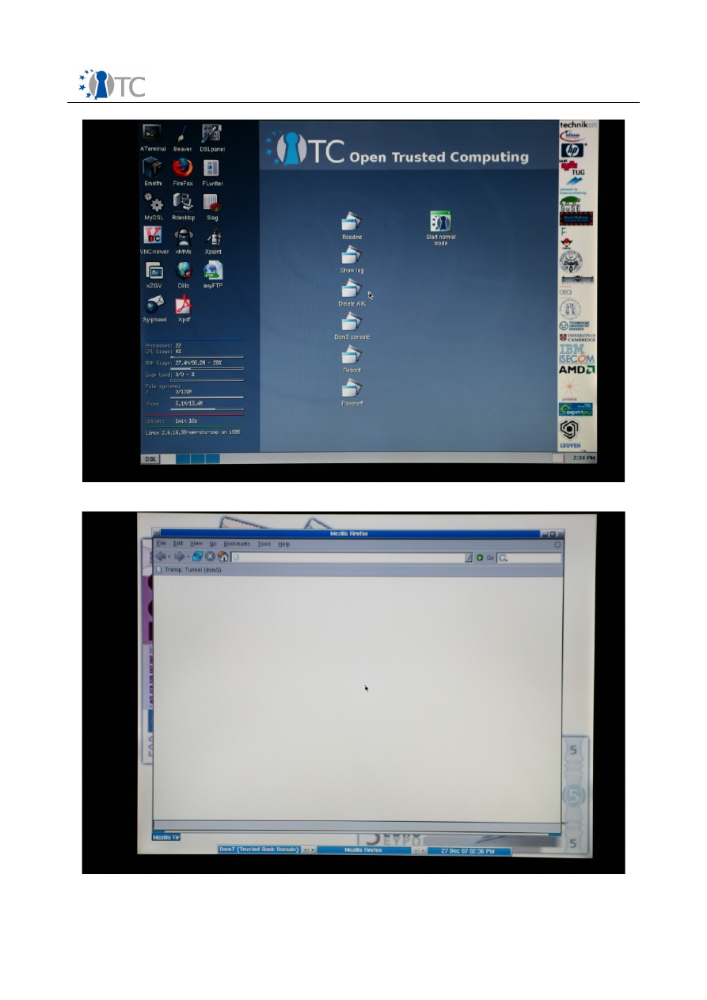

Private Electronic Transaction
(PET) proof-of-concept prototype
documentation
Open Trusted Computing project
Version 1.0
05 March 2008
Authors: Dirk Kuhlmann (Hewlett-Packard, UK), Stephane Lo Presti (Royal Holloway, University of
London, UK),Gianluca Ramunno, Davide Vernizzi (Politecnico di Turino, IT), Erdem Bayer, Mete
Alpaslan Katırcıoğlu, Bora Güngören (Portakal, TR)

OpenTC Prototype Documentation
1.0
Table of Contents
1 Introduction ..............................................................................................................3
2 General presentation of the OTC PET proof-of-concept prototype.............................4
2.1 What is demonstrated in the OTC PET proof-of-concept prototype Live CD?.........4
2.2 General principles of the prototype........................................................................6
2.2.1 Trusted platform setup......................................................................................6
2.2.2 Authenticated boot process...............................................................................7
2.2.3 Registration of the known good values..............................................................8
2.2.4 Trusted communication setup.........................................................................10
2.2.5 Platform components and behavior.................................................................10
2.3 Shortcuts, simplifications and limitations.............................................................11
3 Step-by-step description of the Private Electronic Transactions (PET) scenario.......13
3.1 Roles used in the PET scenario.............................................................................13
3.2 Important information to remember.....................................................................13
3.3 CLIENT STEP 1......................................................................................................14
3.4 CLIENT STEP 2......................................................................................................14
3.5 CLIENT STEP 3......................................................................................................15
3.6 CLIENT STEP 4......................................................................................................15
3.7 CLIENT STEP 5......................................................................................................16
3.8 CLIENT STEP 6......................................................................................................17
3.9 CLIENT STEP 7......................................................................................................21
3.1 0CLIENT STEP 8....................................................................................................21
3.1 1BANK STEP 1......................................................................................................23
3.1 2BANK STEP 2......................................................................................................23
3.1 3BANK STEP 3......................................................................................................24
3.1 4BANK STEP 4......................................................................................................24
3.1 5BANK STEP 5......................................................................................................26
3.1 6BANK STEP 6......................................................................................................26
3.1 7CLIENT STEP 9....................................................................................................29
3.1 8CLIENT STEP 10..................................................................................................29
4 Appendices..............................................................................................................32
4.1 How to enable booting from the CD-ROM on an HP nx6325 laptop......................32
4.2 How to clear and reactivate the TPM on an HP nx6325 laptop.............................32
4.2.1 BIOS Patch.......................................................................................................32
4.2.2 Reactivation Procedure ...................................................................................32
4.3 How to clear and reactivate the TPM on an IBM/Lenovo T60p laptop...................33
4.4 How to set the IP address.....................................................................................33
4.4.1 Rationale and prerequisites.............................................................................33
4.4.2 Procedure in case of DHCP server problems....................................................33
4.5 Procedure for assigning a static IP address..........................................................34
4.6 How to change the boot parameters....................................................................35
4.6.1 System startup parameters.............................................................................35
4.6.2 User startup parameters..................................................................................35
4.7 How to change the bank proxy server..................................................................36
4.8 How to add new server measurements to the client............................................36
Open_TC Deliverable 10c.3
2/36
OpenTC Prototype Documentation
1.0
1
Introduction
This documentation aims at assisting users to correctly set up and use the OTC (Open
Trusted Computing) PET (Private Electronic Transactions) proof-of-concept prototype
that is available at the following url:
http://www.opentc.net/index.php?option=com_content&task=view&id=45&Itemid=63
Source code information is available at this address:
http://www.opentc.net/index.php?option=com_content&task=view&id=47&Itemid=65
The OTC PET proof-of-concept prototype is based on a secure banking scenario that
was defined by the OTC Consortium. Although the Live CD illustrates usage of this
scenario, it does not include a real banking system in any way. The OTC PET proof-of-
concept prototype is released under a disclaimer available at the previous url.
For any question or comment about this document, please refer to this page:
http://www.opentc.net/index.php?option=com_forme&fid=3
This document complements the document “Test instructions for the end user”
available from:
http://ftp.suse.com/pub/projects/opentc/period_1-POC_PET/docs/testplan_otc-suse-dsl-
pet-1.0.pdf
Section 2 of this document presents the OTC PET proof-of-concept prototype from a
design and technical point of view. For a more technical overview of the OTC PET
proof-of-concept prototype, please refer to the article “Private Electronic Transactions
- The OpenTC proof-of-concept prototype” in the third issue (January 2008) of the OTC
newsletter:
http://www.opentc.net/publications/OpenTC_Newsletter_03.html
Section 3 presents the step-by-step procedure to run the OTC PET proof-of-concept
prototype Live CD. You can skip section 2 and jump to Section 3 for straightforward
information on how to run the OTC PET proof-of-concept prototype Live CD.
Open_TC Deliverable 10c.3
3/36
OpenTC Prototype Documentation
1.0
2
General presentation of the OTC PET proof-of-concept prototype
The OTC PET proof-of-concept prototype is the first publicly available computing
system making use of special hardware equipment called a TPM (Trusted Platform
Module), that are available on business computers and laptops. This section will
introduce you to the various concepts and elements necessary to complete the step-
by-step scenario described in the following sections.
2.1 What is demonstrated in the OTC PET proof-of-concept prototype Live
CD?
In the scenario that the OTC PET proof-of-concept prototype implements, a user
performs daily electronic activities named
Private Electronic Transactions (PET)
, such
as online banking, over the world wide web (WWW). Naturally these private electronic
transactions should be secure.
In this scenario, the user would like to be sure that, while performing the private
electronic transaction: (i) his operating system satisfies the security requirements of
the bank; (ii) the connection to the bank server is secure; and (iii) the remote server
can prove reliably that it is the authentic bank server.
To satisfy these three requirements, the user uses a new technology offered by the
Open Trusted Computing project, namely trusted virtualisation . Whenever the user
starts his computer using the OTC PET proof-of-concept prototype Live CD, two
instances of an operating system, also called virtual machines or domains, are in fact
executing in parallel. These two virtual machines are managed by a virtualisation
kernel
1
,also called hypervisor, and correspond to the following usage:
●
The first domain (i.e., operating system environment) is dedicated to the
interaction with online banking services, while the second domain is used for
normal and nonsensitive activities such as word processing and web browsing
of unsecured websites ;
●
All domains are isolated from each other and from the rest of the system, in
order to be able to control the state or each domain and be able to report this
state information to the bank server. This latter functionality allows the OTC PET
proof-of-concept prototype to satisfy the third requirement for accessing the
banking services stated above;
●
The user performs his daily tasks in the second domain and switches to the first
one when he wants to use the banking services.
A simple view of the OTC PET proof-of-concept prototype is shown in Figure 1. In this
picture, the two domains are executing in the Xen trusted hypervisor, next to the
privileged domain
dom0
. The “good values” of the four trusted components (boot
loader, hypervisor, dom0, and the first domain) are securely stored in the TPM and
enable the first domain to connect to the Bank server, whereas the second domain
1 A virtualisation kernel is a small kernel that is able to create and manage virtual machines
where normal operating systems are executing. The OTC PET proof-of-concept prototype
uses two different virtualisation technologies, namely Xen and L4. In the case of the Xen,
there are two separate kernels, one for the management of virtual machines and one for
accessing the platform hardware (which is a special virtual machine called domain 0 or
dom0 in short). L4 uses only one kernel which executes all virtual machines and related
applications.
Open_TC Deliverable 10c.3
4/36
OpenTC Prototype Documentation
1.0
cannot.
Figure 1: General architecture of the OTC PET proof-of-concept prototype
Measuring is the activity of taking a snapshot of an existing program and its
associated configuration state data, which is in practice implemented as taking a hash
of this program and its data. Measuring and recording the state of the first (banking)
domain reliably is critical for this scenario. Hence, the OTC PET proof-of-concept
prototype uses a special piece of hardware called a Trusted Platform Module (TPM)
which is the basic building block used for implementing Trusted Computing
2
by
providing security primitives and shielded memory locations. Trusted Computing is a
new security paradigm based on the open and platform-independent specifications
defined by the Trusted Computing Group (TCG) and provides fundamental security
building blocks that are currently needed to enforce and harden security mechanisms.
Measurement of any program works in the following way:
●
When the program is first executed, the system records the so-called “
good
values
” of this program inside the TPM device. The “good values” are produced
from hashes
3
of several elements that make up the program's environment
2 For more information, see
https://www.trustedcomputinggroup.org/
and
http://en.wikipedia.org/wiki/Trusted_Computing
3 A hash is a function that takes an arbitrary input and produces a digest of the input, i.e. a
fixed-length string, in such a way that the original input cannot be deduced. Common hash
functions are MD5 and SHA-1, the latter being mandated by TCG specifications and with a
Open_TC Deliverable 10c.3
5/36
OpenTC Prototype Documentation
1.0
(binary and configuration files) and can not be reproduced by another program.
One of the fundamental property of the TPM device is that it cannot be
tampered with in software and this ensures that the good values are kept safe.
These two properties ensure that, if the previously recorded good values can
not produced, the server can be sure that the program was modified.
●
These set of all good values kept inside the TPM represent the state of the
system executing, including information about the domain, and must be shown
to the server in order to be allowed to access the banking system. The bank will
only authorise access to the banking services to computers whose good values
are known and recognised.
Programs measured in such a way include the BIOS (Basic Input/Output System, first
program executed when the platform is switched on), the boot loader, the hypervisor
and trusted domains (called this way because their state can be reliably attested using
the Trusted Computing mechanisms).
Similarly, the banking system measures and records its own software state using its
TPM device. The trusted (bank) domain on the client machine will only allow
communication if it receives the expected “good values” from the (remote) bank
server.
Using the OTC PET proof-of-concept prototype, the user can gain confidence that: (i)
the operating system environment used to access the banking services is not
tampered with thanks to the trusted virtualisation; (ii) the communication with the
banking server is secured; and (iii) the remote bank system corresponds to the
expected software that should be running on the banking server.
2.2 General principles of the prototype
The OTC PET proof-of-concept prototype relies on four basic principles that are:
1) Trusted platform
4
setup
2) Authenticated boot process
3) Registration of the known good (measurement) values
4) Trusted communication setup
The following sections give a cursory overview of these steps.
2.2.1 Trusted platform setup
As a first step, the user has to initialise the client platform and to prepare it for the
subsequent operations. This involves operations on the TPM, so the scenario assumes
you already have a TPM in your system. It is possibly the case that your computer has
one, but it has not been enabled by the computer manufacturer. Enabling a TPM
requires the user to use a method that is dependent on each computer manufacturer
(usually a set of commands in the BIOS and this usually involves specifying an
authorisation password, see Appendices 4.2 and 4.3 for more details). For obvious
privacy reasons, computer manufacturers do not enable TPMs by default, but rather
ask users to opt in the technology following a method that make the choice apparent.
hash size of 160 bits (8 bytes).
4 A “trusted platform” is, technically speaking, a platform that contains a TPM and software
that can implement a chain of trust so as to deliver services based on the Trusted
Computing mechanisms in a way conforming with the TCG specifications.
Open_TC Deliverable 10c.3
6/36
OpenTC Prototype Documentation
1.0
The set up procedure of the OTC PET proof-of-concept prototype is performed as soon
as the system is started up for the first time. First the user, acting as the platform
owner, must "take ownership" of the TPM. This assumes that the TPM is enabled in the
BIOS and, if it was already used before, is cleared
5
and re-enabled.
Next, an Attestation Identity Key (AIK) needs to be created, certified by a Privacy
Certification Authority (Privacy CA) and the corresponding identity activated. An AIK is
a unique cryptographic key that is used for the purpose of signing attestation and
platform authentication messages. An AIK can be created only by the TPM owner or
some entity delegated to do so. The Privacy CA is used to blind an AIK verifier to the
TPM unique Endorsement Key and enables the same TPM to use various keys.
In a real-world situation, Privacy CAs that operate a valid TC-enabled Public Key
Infrastructure (PKI) would be used during this process to certify the AIK. However, for
the sake of simplicity, both the requests for and the release of the AIK certificate
operations are handled locally on the client using hard-coded passwords. This is done
using a software library that comes with hard-wired mock certificates for the
authorities involved.
2.2.2 Authenticated boot process
From the initial boot up process up to the start of the trusted components, a chain of
trust is generated: each component of the chain is measured prior to passing control
6
to it. The component measurements, i.e., cryptographic hashes of relevant binary and
configuration data, are stored in small memory areas of the TPM called Platform
Configuration Registers (PCR). PCRs are used to safely store critical data. However, the
number of PCRs in a TPM being limited, it is possible to store a sequence of binary
hashes in a single PCR in an operation called “extending the PCR”, which creates a
concatenated hash of the sequence of values.
In order to generate the chain of trust, all components in the chain of execution must
be instrumented to perform integrity measurements of their successors in the chain of
execution. For example, the BIOS must include a Core Root of Trust for Measurement
(S-CRTM) as defined by the TCG to measure the subsequent components of the boot
process, such as the Master Boot Record (MBR) and the boot loader. The latter has to
check the integrity of the hypervisor, the kernel and initial ram disk image of
privileged domains, or files or disk images of trusted domains.
For this purpose, the OTC PET proof-of-concept prototype includes tGRUB
7
, an
extension of the familiar open source GRUB loader. The tGRUB boot menu allows
5 Clearing operation deletes data previously stored in the TPM permanently, so it is a very
sensitive operation that should only be performed when the user fully knows the
consequences. The appendices in this document demonstrate how to do this correctly for a
reference platform.
6 In terms or operating systems architecture, hardware and software components are often
“layered” on top of each other. The system starts up by executing the lowest layer (BIOS)
and when a particular layer is executing it has access to and control over the lower layers.
So the term “passing control” refers to letting a particular layer execute.
7 For more information on the tGrub component, see:
http://www.trust.rub.de/home/concluded-projects/trustedgrub/trustedgrub_details/
Open_TC Deliverable 10c.3
7/36
OpenTC Prototype Documentation
1.0
choosing between the two different hypervisors used by the OTC PET proof-of-concept
prototype: Xen
8
and Fiasco L4
9
.
Once the hypervisor has been selected, a second boot menu option proposes different
execution mode for the OTC PET proof-of-concept prototype:
●
A "normal user" mode that comes with a simplified interface and restricts
access to management functions. This mode is geared towards showing how
the user can perform a transaction in a real-life scenario in an easy and intuitive
way.
●
The "expert user" mode, on the other hand, enables full access to management
features permitting to peek “under the hood”. It allows interactive access to all
the features implemented in the OTC PET proof-of-concept prototype and comes
with a more complex interface.
As a demonstration of the differences between successful and failing verification of
integrity measurements, the boot menu also provides a "good domT" and a "rogue
domT" option, “domT” being the name of the trusted (bank) domain. Details of this
option are the following:
●
In the "good" mode, all measurements match expected values.
●
On the other hand, the "rogue" mode simulates a modified domain that could
have been tampered by the attack of a malicious program. In this case, at least
one PCR contains an measurement value that do not match what the bank
server expects.
The tGRUB bootloader is constrained to supporting the so-called "Static Root of Trust
for Measurement" (S-CRTM) model. In this case, all security and trust relevant
components have to be measured during the boot process, starting with the BIOS and
up to the trusted hypervisor. The boot procedure follows the normal sequence of
programs, each of them modified to implement the chain of trust.
On the other hand, to demonstrate the new "Dynamic Root of Trust for
Measurement" (D-CRTM) approach introduced with TPM v1.2
10
, OTC PET proof-of-
concept prototype provides the OSLO boot loader module
11
as a standard module for
GRUB/tGRUB. OSLO implements the D-CRTM for AMD' s CPUs, invoking the SKINIT
instruction for re-initializing the platform in a trustworthy manner late at runtime. This
way, and contrarily to the S-CRTM case, a trusted hypervisor can be started at any
point in time during the platform execution.
2.2.3 Registration of the known good values
Having set up and initially booted the trusted platform, the client can now register to a
server by uploading the measurements representing its platform state. As this
8 For more information on the Xen project, see:
http://www.cl.cam.ac.uk/research/srg/netos/xen/
9 For more information on the L4 project, see:
http://os.inf.tu-dresden.de/L4/
10 As with most hardware components, TPMs conform to specifications and the versions refer
to the specification versions. The 1.2 version is the most current version for a TPM
specification at the time of writing and conforming TPMs have a number of new and
advanced features.
11 For more information on the OSLO boot loader module, see:
http://os.inf.tu-
dresden.de/~kauer/oslo/
Open_TC Deliverable 10c.3
8/36
OpenTC Prototype Documentation
1.0
platform state is assumed to be trusted, the user should register a system
corresponding to components from verifiable sources and configured correctly. In the
case of open source software, this can be achieved by checking that correct packages
are installed. In the case of proprietary software, various schemes exist for achieving
this, e.g. software certification.
During the registration procedure, the user (acting as a bank operator) registers his
platform with a bank server. To do this, he authorises the trusted domain to connect to
the bank server and uploads the integrity measurements of his platform. The upload
of the measurement digests is done automatically in the "normal user" mode and
using a script in the “expert user” mode, and the values are sent via a front-end proxy
running on the bank server.
Until now, the OTC PET proof-of-concept prototype has been presented as a client
computer connecting to a bank server which is on a remote computer connected to
the network. For the sake of simplificity, the bank server is actually a separate domain
(named domS) executing on the same computer as the client software. Although this
is not a realistic environment for the e-Commerce scenarios, this architecture does not
require that a remote server is available. Because of this architecture, the
measurements of the banking server are already present on the client side (in a
privileged domain of the hypervisor named Domain-0 or dom0) of the OTC PET proof-
of-concept prototype.
Figure 2 illustrates the architecture of the OTC PET proof-of-concept prototype
described so far.
Figure 2: Architecture of the OTC PET proof-of-concept prototype Live CD
Open_TC Deliverable 10c.3
9/36

OpenTC Prototype Documentation
1.0
2.2.4 Trusted communication setup
In order to decide on the authenticity of each other, both the user's trusted (bank)
domain and the bank server have to exchange each other's good values. This
exchange itself is handled in a secure manner:
●
The exchange of trust status information between the client and the server is
achieved through a pair of proxy services running in a privileged domain (dom0)
on the client and as a front-end in the server domain (domS), see Figure 2.
●
The proxies communicate through an SSL/TLS tunnel that can encapsulate any
TCP-based protocol. For the PET scenario, HTTPS is used.
The sequence of actions is then the following and correspond to the green arrow in
Figure 2:
●
The communication setup is initiated when starting the web browser in the
trusted domain (domT) and clicking on the link provided in its tool bar.
●
The connection request is passed to the client proxy that runs in the privileged
domain (dom0).
●
A dedicated component running in this domain opens an SSL/TLS tunnel to
connect to the server side proxy running in the bank server domain (domS). The
permissibility of this connection
12
must be stated in the policy of the hypervisor.
●
Measurements of software components on both sides are represented by PCR
values. These values are signed with the attestation identity key (AIK) created
earlier, and communicated to the respective domains.
Communication between the client and the server will only be enabled if both the
client and the server measurements suggest that they booted the previously known
“good” configuration. This trusted communication helps counter phishing attacks
13
,
preventing the user from following a misguiding URL to connect to a fake bank server.
The mechanism can also improve the protection of the bank server against
unauthorized connections, as seen in Figure 2 with the red arrow.
2.2.5 Platform components and behavior
As the previous section briefly discussed, the authenticated boot process launches a
number of domains, each with a different functionality. There is a total of four domains
running on the selected hypervisor (either Xen or L4) and they are named as follows
(see the four boxes at the top of Figure 2):
1)The privileged domain, dom0;
2)The server side domain, domS;
3)The user's trusted banking domain, domT;
4)The user's untrusted domain, domU.
12 The permission to make a connection to a web site may be subject to many constraints
related to network security. The OTC PET proof-of-concept prototype does not assume any
such constraints but they may be present in a real situation.
13 During a phishing attack, the user is lured into clicking on a link that sends him to a web site
which looks exactly as a genuine banking web site. Once the user enters his login and
password information, the attacker steals that information and can access the real bank site,
pretending to be the user.
Open_TC Deliverable 10c.3
10/36

OpenTC Prototype Documentation
1.0
The privileged domain (dom0) directly accesses the physical hardware and includes
the drivers for hardware devices. This domain is also used to perform management
operations at the virtualisation layer. In "normal user" mode, this domain is not visible.
The domain for the server side of the prototype (domS) executes the banking
application and its front-end. It locally simulates a remote server (web server and
proxy), but is rather executed locally. This architecture removes the need for
connecting to a separate banking computer, though network access is still needed
(see Appendix 4.4 for more information on DHCP issues). The domS domain is
accessed via the network name "domSbox", and a software TPM emulator (a program
emulating a TPM) is used to perform the integrity-related operations (since the
hardware TPM can only be used for the client side of the OTC PET proof-of-concept
prototype). The domain is never visible to the user.
The first user domain (called domT) solely provides web browsing as its only
functionality. It is considered a trusted domain because its integrity can be ensure
thanks to its measurement and the values correspond to a well-known configuration.
The second user domain (called domU) is an untrusted one. It is not measured and is
only intended for casual use, and not for sensitive operations such as connecting to
the bank services.
The policy of the OTC PET proof-of-concept prototype ensures that: (i) only the trusted
domain (domT) is authorised to use the client proxy (executing in the privileged
domain dom0) for connecting to the bank server (executing in domS); and (ii)
connections of the untrusted domain (domU) to the bank server are not allowed, since
there are no measurements that can be used to attest to its trusted state.
2.3 Shortcuts, simplifications and limitations
Trusted computing is an emerging technology and infrastructure support for this
technology (e.g., for issuing certificates) does not exist yet. The technology is also
fairly complex. For example first time users are easily confused by the multiplicity of
authorisation secrets (e.g. passwords). For the sake of simplicity, the OTC PET proof-
of-concept prototype therefore uses fixed passwords as authorization secrets for the
TPM and AIK keys (which can, of course, be changed for all operations by editing the
configuration scripts in the "expert user" mode).
The prototype attempts to strike a balance here in providing all necessary components
(including PKI mechanisms) as part of the distribution. In particular, the server side
mechanisms reside in a dedicated domain on the same physical hardware that runs
the client. Other assumptions made in the OTC PET proof-of-concept prototype are:
●
The PCR metrics corresponding to a trusted PKI server state are currently hard-
wired into the PKI component running on the client system.
●
The banking domain domS is not actually measured since it employs a TPM
emulator instead of a hardware TPM. Instead, we just communicate the initial
PCR values of the software TPM. In a future release of the OpenTC prototype,
the server side will run on a different physical platform, and integrity
measurements of the server domain will be duly recorded.
Open_TC Deliverable 10c.3
11/36

OpenTC Prototype Documentation
1.0
In the "rogue domT" scenario, the measurement of the client banking domain (domT)
does not correspond to the one uploaded earlier to the bank server. Consequently, the
attestation will fail and communication with the bank server will be disallowed. Due to
implementation specifics, the PCRs mismatch currently has to be simulated in that the
values are not generated from actual measurements of the persistent domain image.
A future release will fix this issue.
Furthermore, the current prototype is also limited in the sense that man-in-the-middle
or "relay of attestation challenge" attacks
14
have not yet been considered.
14 For more information, see: Kenneth Goldman, Ronald Perez and Reiner Sailer: Linking
remote attestation to secure tunnel endpoints. In: Proceedings of the first ACM workshop on
Scalable Trusted Computing (STC '06), pp. 21-24. Alexandria, Virginia, USA, 2006. ACM
Press, ISBN: 1-59593-548-7, http://doi.acm.org/10.1145/1179474.1179481
Open_TC Deliverable 10c.3
12/36

OpenTC Prototype Documentation
1.0
3
Step-by-step description of the Private Electronic Transactions
(PET) scenario
3.1 Roles used in the PET scenario
The scenario underlying the architecture of the OTC PET proof-of-concept prototype
involves two stakeholders: one is the bank providing online banking services and the
other one is the bank client who wants to access the services.
The standard client-server architecture is normally implemented with two different
computers and requires cooperation of the user and the bank in that trust information
(the “good values”) need to be exchanged.
Nevertheless, in order to enable a single user go through the PET scenario alone and
using only one computer, the OTC PET proof-of-concept prototype has been structured
as follows:
●
The bank server correspond to a separate invisible domain, running on the
user's computer.
●
The client side of the system comprises two domains, one of which is used
specifically for accessing the online banking services. The user has to assume
the role of the bank and authorize himself using a hypothetical bank interface.
Because of this architecture, the roles of customer of secure banking and the bank are
respectively must be endorsed by the same user. In the following, these roles are
respectively represented by the labels CLIENT and by BANK.
3.2 Important information to remember
●
The OTC PET proof-of-concept prototype requires that any USB flash disks be
removed from the computer in order to function properly. Please remove any
USB disk before your computer is powered up.
●
This prototype is a Linux Live CD, which means it will not install anything on
your hard drive or employ your hard drive for any purpose. However, your
computer must be booted using this CD. The method for changing (if necessary)
the boot device order on your computer vary between computer manufacturers.
Consult the platform manufacturer's documentation of your computer for more
information on how to enable booting from the CD device.
●
In order to run correctly the OTC PET proof-of-concept prototype, a TPM chip is
required. Your computer must have a TPM chip and it must be detected by the
prototype boot-time components. You can verify this on the first screen when
your computer boots from this CD (see
CLIENT STEP 2
below).
●
The OTC PET proof-of-concept prototype comes with a disclaimer of
responsibility, please read it carefully before attempting to run the Live CD.
The following sections describe the step-by-step instructions to perform the PET
scenario using the The OTC PET proof-of-concept prototype Live CD.
Open_TC Deliverable 10c.3
13/36
OpenTC Prototype Documentation
1.0
3.3 CLIENT STEP 1
The purpose of this step is to boot your computer from the OTC PET proof-of-concept
prototype Live CD. You have successfully burned the Live CD image to a blank CD and
now have the CD in hand.
Now, power up your computer and insert the OTC PET proof-of-concept prototype Live
CD into your CD-ROM drive.
If your computer boots from the CD properly, you should see a screen similar to
screenshot 1
below. If not, please consult your manufacturer's manual on how to
enable booting from the CD device.
Screenshot 1. Bootloader with no TPM detected during booting from Live CD.
Note:
Appendix 4.1 of this document explains how to setup booting from the CD
device on an HP nx6325 laptop, one of the reference hardware platforms chosen by
the OTC Consortium. The procedure on other computer models may differ and
Appendix 4.1 might give you hints. Consult the platform manufacturer's
documentation of your computer for more information.
3.4 CLIENT STEP 2
This step involves checking whether your TPM is detected by the OTC PET proof-of-
concept prototype. The TPM is a crucial part of the prototype and is necessary for the
following steps.
Open_TC Deliverable 10c.3
14/36

OpenTC Prototype Documentation
1.0
When the Trusted GRUB screen appears (see
screenshot 1
), check the top left corner
of the window. If there is a “No TPM detected!” message as in
screenshot 1
, then you
either don't have a TPM or it has not been enabled.
In the latter case, you need to enable your TPM by restarting you computer and
accessing the BIOS setup of the computer. Methods for accessing the BIOS setup and
enabling the TPM differs between computer manufacturers and models, so you should
consult the computer documentation. Appendices 4.2 and 4.3 of this documents
describes the procedure for, respectively, the HP nx6325 and IBM T60p laptops.
If on the other hand, the Trusted Grub window displays a “TPM detected!” message,
then your computer has a TPM and it is enabled. You can continue on to
CLIENT STEP
3
.
3.5 CLIENT STEP 3
In this step, you will select one of the boot options of the OTC PET proof-of-concept
prototype. The first option to choose from is the choice of the hypervisor between Xen
and L4. See section 2.2.2 for more information.
Since the following procedures are the same for both options, we only cover Xen in the
following.
Now, select XEN-DSL-PET-1.0 from the menu, and press Enter.
3.6 CLIENT STEP 4
Following the previous step, the second option, called a
configuration
, to choose from
is the choice of the mode of execution of the OTC PET proof-of-concept prototype. See
section 2.2.2 for more information.
The three options, shown in
screenshot 2
, are presented in the form of a triplet with
the following information:
●
User mode
: This corresponds to the two values “normal” and “expert”, and
indicates, respectively, whether the user has access to all the features of the
OTC PET proof-of-concept prototype from a command-line interface or not. The
“Expert mode” is only intended for experimentation by expert users. This
document will guide you through the “Normal Mode”.
●
DomT mode
: This mode as the values “good” and “rogue”. It is used to
demonstrate the “rogue domain” feature, where a modified domain (called
domT) is executed to demonstrate, later in this scenario, that trusted
communication is not allowed in this case.
●
PET mode
: this aspect is irrelevant for the OTC PET proof-of-concept prototype
Live CD and should be ignored. It is set to “standard”.
The three options correspond to the following behaviors:
●
Option 1 is in “Expert Mode” with a normal “domT”;
●
Option 2 is also in “Expert Mode” but with a rogue “domT”;
●
Option 3 is a “Normal Mode” where the basic demonstration of the scenario is
shown without access to the advanced features of the OTC PET proof-of-concept
Open_TC Deliverable 10c.3
15/36
OpenTC Prototype Documentation
1.0
prototype.
We show in the following the OTC PET proof-of-concept prototype running after Option
3 was selected.
When you select an option and press Enter, the selected configuration loads a number
of domains on your computer. This takes more time than loading a single operating
systems, so do not be surprised if the process is slow. Messages on the status of the
component loading are displayed, as seen in
screenshot 3
.
3.7 CLIENT STEP 5
When the loading process is finished, a login screen is presented to the user (see
screenshot 4
).
At the login prompt, simply type the user name “root” and press Enter (you do not
need a password in this prototype).
Note:
The user “root” is the systems administrator in Linux and has all privileges by
default. In a real-world scenario, the user would not need to log in as “root”, but the
OTC PET proof-of-concept prototype use this account for the sake of simplicity.
Screenshot 2. OTC PET proof-of-concept prototype boot options.
Open_TC Deliverable 10c.3
16/36
OpenTC Prototype Documentation
1.0
Screenshot 3. OTC PET proof-of-concept prototype loading domains.
3.8 CLIENT STEP 6
Once logged in, the user is presented with a command prompt. The prompt will be
labeled with a description ending with the character “#” (see
screenshot 5
). This
description indicates that you are logged in as the system administrator of the
platform.
The user then has to start the X Window graphical user interface by typing the
command “startx” and pressing Enter. This command starts the graphical user
interface at the default resolution of 1024x768.
The graphical user interface that is launched starts two different domains, called
domU and domT (see
screenshot 6
, and Section 2.3 for more details). The user has
to wait until both are displayed (see
screenshots 7 and 8
):
●
The first domain (called domU) is used for normal and nonsensitive tasks and is
accessible at all times via the keyboard shortcut "Alt+F1" (see
screenshot 7
).
●
The second domain (called domT) is used only for the online banking operations
and is accessible at all times via the keyboard shortcut "Alt+F2" (see
screenshot 8
).
○
The only application used in domT is the Firefox web browser.
○
If you accidentally close the browser window in the domT domain, you can
restart it manually. In order to do so, right-click on the desktop and select
“xterm” from the menu. Then on the terminal screen type “firefox” and
press Enter.
Open_TC Deliverable 10c.3
17/36
OpenTC Prototype Documentation
1.0
On the desktops of the two domains, single-clicking an icon executes the default
action on the object (i.e., opening a file, executing a script). Double-clicking an item
may lead to problems and should be avoided. Whenever you are asked to click on an
icon, remember to click only once.
Note:
In the Xen-based OTC PET proof-of-concept prototype, the domain screens are
mapped to function keys (Alt+F1, Alt+F2). This mapping is heavily dependent on the
graphics resolution and you might experience problems with higher resolutions. So
sticking with the default 1024x768 resolution (when the command “startx” is typed
without options) is a safe choice.
Screenshot 4. Loggin screen of the OTC PET proof-of-concept prototype.
Open_TC Deliverable 10c.3
18/36
OpenTC Prototype Documentation
1.0
Screenshot 5. Starting the X Window GUI interface from the prompt.
Screenshot 6. OTC PET proof-of-concept prototype is loading the 2 domains.
Open_TC Deliverable 10c.3
19/36

OpenTC Prototype Documentation
1.0
Screenshot 7. The desktop of domain domU, used for non-sensitive tasks.
Screenshot 8. The desktop of domain domT, used for online banking tasks.
Open_TC Deliverable 10c.3
20/36

OpenTC Prototype Documentation
1.0
3.9 CLIENT STEP 7
After the two graphical user interfaces (one for each domain) are loaded, the domain
domT, the banking domain, is displayed. You can switch to the domain domU by
pressing “Alt+F1”, and switch back to domT by pressing “Alt+F2”.
The desktop of the domain domU has a few icons (see
screenshot 7
):
●
The icons on the left are link to general computer programs. They include the
Firefox web browser, the XMMS application for playing MP3 files, the xPDF
application for viewing PDF applications, etc.
●
The icons in the middle of the screen are specific to the OTC PET proof-of-
concept prototype. They are shortcuts to scripts
15
used to execute the features
of the OTC PET proof-of-concept prototype. The scripts are:
○
Readme
: This displays a brief documentation on the OTC PET proof-
of-concept prototype.
○
Show log
: The logs of all the Trusted Computing functions executed so
far are shown.
○
Delete AIK
: This script deletes the previously generated AIK (see
Section 2.2.1 for details) from the USB stick.
○
Dom0 Console
: A console window for accessing the privileged domain
dom0 is opened.
○
Reboot
: Reboots the machine.
○
Power off
: Powers off the machine.
●
The “Start normal mode” icon is used to start the trusted communication and is
described next.
3.10 CLIENT STEP 8
At this point in the banking scenario, all is ready to begin setting up the
communication with the trusted banking server.
Click on the “Start normal mode” icon on the desktop of the domU domain. A terminal
window is opened and the process of setting up the secure communication is started.
The terminal window shows the various functions being performed:
●
STEP 1 will take ownership of TPM (see
screenshot 9
).
●
STEP 2 will generate the AIK (see
screenshot 10
).
●
STEP 3 will create the good values for the platform (see
screenshot 11
).
●
STEP 4 will register the platform with the bank server (see
screenshot 11
).
●
STEP 5 will display for the tasks to be executed on the bank domain domS (see
screenshot 11
).
When the script is complete, the user is asked to press Enter. At this point, a client
proxy used to relay the trusted communication is started.
The bank (represented by the domain domS) has to accept and enable the good
values that have been uploaded by the user using the script. This is done
transparently.
15 Scripts are a means to automate actions in Linux and call other programs to be executed in
a particular order with certain parameters.
Open_TC Deliverable 10c.3
21/36
OpenTC Prototype Documentation
1.0
Screenshot 9. Ownership of the TPM is taken.
Screenshot 10. An AIK is generated.
Open_TC Deliverable 10c.3
22/36
OpenTC Prototype Documentation
1.0
Screenshot 11. The communication set up script has completed.
3.11 BANK STEP 1
In this step, the user connects to the bank web-based system as the bank in order to
process the information provided by the customer in
CLIENT STEP 8
.
Switch back to he first domain domU by pressing “Alt+F1”. Click on the Firefox icon on
the desktop. (see
screenshot 7
). The instance of the Firefox web browser only has
one link in in the toolbar named “OTC bank proxy server” (see
screenshot 12
). Click
on this link and you will be directed to the webpage with address
https://domsbox:
8443
.
3.12 BANK STEP 2
A certificate is now presented by the bank server to the user and has to be accepted
to connect to the bank web-based system.
The certificate is issued from “domSbox”, the designated network domain name for
the bank server executing in the domain domS. This certificate is necessary to
establish a secure SSL/TLS tunnel used during the communication.
Firefox displays a prompt window asking you to accept or reject the certificate
presented by the server (see
screenshot 13
). In the dialog box, choose “Accept this
certificate temporarily for this session” and click on the “OK” button.
Open_TC Deliverable 10c.3
23/36
OpenTC Prototype Documentation
1.0
3.13 BANK STEP 3
Now, the bank web-based system is displayed and the user has to login to the bank
server by entering user name and password.
At the prompt, type “bank-op” as a user name and “otc” as the password (see
screenshot 14
), and finally click the OK button.
3.14 BANK STEP 4
Once successfully logged in, the user has to navigate to the platform registration
page.
From the bank server home page initially displayed, a number of links are available
(see
screenshot 15
). Click on the “management of the platform registration” link.
Screenshot 12. Firefox started in the domU domain and its toolbar.
Open_TC Deliverable 10c.3
24/36
OpenTC Prototype Documentation
1.0
Screenshot 13. Certificate dialog window displayed for the bank websystem.
Screenshot 14. Logging in to the bank web system.
Open_TC Deliverable 10c.3
25/36
OpenTC Prototype Documentation
1.0
Screenshot 15. The bank web system's main page.
3.15 BANK STEP 5
During this step, the user will access the records of the trusted banking domain
(domS) on the banking web system.
In the “management of the platform registration” page (see
screenshot 16
), you will
find a list of the platforms that are registered on the banking server. We will use for
this scenario the one named “OTC-Generic”.
Note:
You can also create a new entry with a chosen name using the “Registering a
new platform” form at the bottom of the page.
Click on the “OTC-Generic” link, which will redirect you to another page to manage the
selected platform.
3.16 BANK STEP 6
Now, the user must enable the good values of the trusted banking domain (domT) so
that trusted communication is possible in the next steps.
The list of the enabled and disabled good values for the platform “OTC-Generic” will
be listed (see
screenshot 17
). Initially the enabled list is empty, because the
uploaded values are put in the disabled list by default.
Open_TC Deliverable 10c.3
26/36
OpenTC Prototype Documentation
1.0
Each good value is listed by the name of the uploaded file, together with the value
(the SHA-1 digest of the domain that was measured). Each good value can be enabled
or disabled individually.
You will see only one entry in the disabled list. Under this entry, click on the “enable
this set” link to enable the good values. The user's banking domain (domT) is now
registered with the bank server (see
screenshot 18
). You will see that the disabled
list of empty, while the enabled list was updated with the good values (see
screenshot 19
).
There are two links at the top of the page, named “home” and “back”. Click on the
“back” link. Do not use the browser's back button.
Note:
At this point in the PET scenario, the bank has just approved the good values
corresponding to the customer's platform configuration. The user is now allowed to
connect to the banking services.
Screenshot 16. Management of the platforms page.
Open_TC Deliverable 10c.3
27/36
OpenTC Prototype Documentation
1.0
Screenshot 17. Known good values for the selected platform.
Screenshot 18. The known good values have been enabled.
Open_TC Deliverable 10c.3
28/36
OpenTC Prototype Documentation
1.0
Screenshot 19. Updated list of the enabled and disabled list of good values.
3.17 CLIENT STEP 9
Now that the trusted communication setup is completed, the user has to switch back
to the trusted banking domain (domT), also switching role in the scenario.
Press “Alt+F2” to switch back to the domain domT. You will see the Firefox browser
window (see
screenshot 20
), as when the domain was started in
CLIENT STEP 6
(see
screenshot 8
).
3.18 CLIENT STEP 10
The final step in the PET scenario consists in accessing the banking services from the
trusted banking domain (domT).
Click on the “Trans. Tunnel (domS)” link in the Firefox tool bar. Firefox will ask you if
you want to accept the certificate presented by the banking server (see
screenshot
21
). In the dialog box, choose “Accept this certificate temporarily for this session” and
click on the “OK” button. Upon successful connection, you will see a welcome web
page (see
screenshot 22
).
Congratulations!
You have successfully completed the PET scenario using the OTC
PET proof-of-concept prototype Live CD. The welcome page is only here to illustrate
the endpoint of the scenario, and does not offer a real banking service.
Open_TC Deliverable 10c.3
29/36
OpenTC Prototype Documentation
1.0
Screenshot 20. The Mozilla Firefox browser in the domain domT.
Screenshot 21. The certificate of the banking domain domS is presented.
Open_TC Deliverable 10c.3
30/36
OpenTC Prototype Documentation
1.0
Screenshot 22. Welcome page after successful trusted communication.
Open_TC Deliverable 10c.3
31/36
OpenTC Prototype Documentation
1.0
4
Appendices
These appendices describe various technical aspects of the OTC PET proof-of-concept
prototype.
4.1 How to enable booting from the CD-ROM on an HP nx6325 laptop
●
When your computer powers up, press the “F10” key to enter the BIOS setup;
●
Select the “Boot Device” menu;
●
Select the “Optical Disk Drive” option to boot from CD-ROM;
●
Save the changes and exit the BIOS setup.
4.2 How to clear and reactivate the TPM on an HP nx6325 laptop
Note:
Clearing and reactivating the TPM will delete all keys in the TPM. Any data that
has been encrypted using the keys stored or dependent on the TPM will become
inaccessible.
4.2.1 BIOS Patch
The BIOS version should be F04 or higher. If you have an earlier version, you should
first install the BIOS update that can be downloaded from the following address in the
HP support site:
http://h20000.www2.hp.com/bizsupport/TechSupport/DriverDownload.jsp?
&lang=en&cc=uk&pnameOID=1849083&taskId=135&prodTypeId=321957&prodSerie
sId=1849082&lang=en&cc=uk
4.2.2 Reactivation Procedure
You should first clear the TPM:
●
When your computer powers up, press the “F10” key to enter the BIOS setup;
●
Enter the “Security” section;
●
Select “TPM Embedded Security”;
●
Set the “Reset to factory settings” option to “Yes”;
●
Save the changes and exit the BIOS setup;
●
When you reboot, a prompt asks the question “Clear the TPM?”;
●
Answer “Yes”.
The TPM is now cleared. The TPM needs to be re-activated, following the same
procedure as if it was activated for the first time:
●
During the laptop power up, press the “F10” key again to enter the BIOS setup;
●
Enter the “Security” section;
●
Select “TPM Embedded Security”;
●
Set the “Embedded Security Device State” option to “Enabled”;
●
Save changes and exit the BIOS setup;
●
When you reboot, a prompt asks the question “Activate the TPM?;
●
Answer “Yes”.
Open_TC Deliverable 10c.3
32/36

OpenTC Prototype Documentation
1.0
The TPM is now active.
4.3 How to clear and reactivate the TPM on an IBM/Lenovo T60p laptop
Note:
Clearing and reactivating the TPM will delete all keys in the TPM. Any data that
has been encrypted using the keys stored or dependent on the TPM will become
inaccessible.
The procedure is as follows:
●
Power down the laptop;
○
Note that a reboot will not suffice;
●
Power up the computer;
●
Press the blue “Think Vantage button” to bring up the boot menu;
●
When the boot menu appears, press “F1” to bring up the BIOS setup;
●
Enter the “Security” section;
●
Set the “Security Chip” option to “Active”;
●
Choose the “Clear Security Chip” option as well to revoke ownership;
●
Save the changes and exit BIOS;
●
Power down the laptop again;
●
Finally, power up the laptop.
4.4 How to set the IP address
4.4.1 Rationale and prerequisites
The virtual machines of the OTC PET proof-of-concept prototype require a DHCP server
in the local area network (LAN) to get their (local) IP addresses. However, there might
be problems related to DHCP servers:
●
The DHCP server may time-out and not assign dynamically an IP address;
●
There may not be a DHCP server at all;
●
There may be IP address conflicts.
In these three cases, you might need to set up the IP addresses manually.
Note:
The Linux images prepared for OTC PET proof-of-concept prototype Live CD are
configured to use only ordinary (i.e. wired) ethernet connections. You can not use
wireless networking with the prototype.
Note:
The OTC PET proof-of-concept prototype always assumes that the eth0
interface is used. In case you have more than one network card, the one with the
cable plugged in might not be eth0. The order of the interfaces (e.g., eth0, eth1, etc.)
may be different from the order when using your normal Operating System.
Note:
Any change you make when running the OTC PET proof-of-concept prototype
Live CD is lost when you reboot.
4.4.2 Procedure in case of DHCP server problems
●
Boot the OTC PET proof-of-concept prototype, connected to the wired network;
●
Login but do not start the X Window GUI;
Open_TC Deliverable 10c.3
33/36

OpenTC Prototype Documentation
1.0
○
Now you have full root access from the terminal;
●
Use the ifconfig command to check the state your network card. A card that has
been assigned an address should give an output like the following (IP address is
highlighted):
# ifconfig eth0
eth0 Link encap:Ethernet HWaddr 00:17:08:35:5E:AF
inet addr:192.168.1.4
Bcast:192.168.1.255
Mask:255.255.255.0 UP BROADCAST MULTICAST MTU:1500
Metric:1 RX packets:109435 errors:0 dropped:0 overruns:0 frame:0
TX packets:106817 errors:0 dropped:0 overruns:0 carrier:0
collisions:0 txqueuelen:1000 RX bytes:101900227 (97.1 Mb)
TX bytes:27928481 (26.6 Mb) Interrupt:233
●
If the network card is not listed at all or if it has not been assigned an IP
address, then continue the instructions below;
●
Firstly, re-attempt to send a DHCP request by executing the following
commands a few times:
# ifdown eth0
# ifup eth0
●
If you do not get any error message, you should now have an IP address;
○
Verify this by executing the “ifconfig” command as shown above. If you have
succeffully obtained an IP address, you can use the “startx” command to
continue with the prototype's original scenario (
CLIENT STEP 6
).
●
If you get an error message when using the command “ifup”, then modify the
file /etc/pump.conf, and increase the two numbers, corresponding to the
number of retries and the timeout period, the following way:
retries 5
timeout 15
●
Execute the ifdown/ifup sequence of commands again.
Note:
If you don't have a DHCP server, or all these methods fail, you will have to set
up a static IP, see next section.
4.5 Procedure for assigning a static IP address
●
Boot the OTC PET proof-of-concept prototype, connected to the wired network;
●
Login but do not start the X Window GUI. Now you have full root access on the
terminal;
●
Modify the /etc/network/interfaces file, and change the label “dhcp” to “static”
in the following line:
iface eth0 inet dhcp
●
Also add the following lines with the appropriate information for your network
connection:
address YOUR_IP_ADDRESS
netmask YOUR_NETWORK_MASK
broadcast YOUR_BROADCAST_IP_ADDRESS
gateway YOUR_GATEWAY_IP_ADDRESS
dns -nameservers YOUR_NAMESERVER(S)_IP_ADDRESS(ES)...
●
Modify the /etc/resolve.conf file by changing the following lines with the
appropriate information (as above):
search YOUR_DOMAIN_NAME
nameserver FIRST_NAMESERVER_IP_ADDRESS
Open_TC Deliverable 10c.3
34/36

OpenTC Prototype Documentation
1.0
nameserver SECOND_NAMESERVER_IP_ADDRESS
nameserver ...
●
Execute the ifdown/ifup sequence of commands, as shown in the previous
section. The network interfaces should now be up with the static address.
4.6 How to change the boot parameters
There are two types of boot parameters that can be changed in the OTC PET proof-of-
concept prototype:
●
Trusted GRUB's list of images to load are stored in the file /boot/grub/menu.lst,
and they can also be modified at run-time by using GRUB's edit mode;
●
All other startup parameters are stored in the /etc/otc.conf file. This file is
formatted in a bash format, and anyone with experience in editing Linux
configuration files should have no difficulty in configuring the OTC PET proof-of-
concept prototype.
4.6.1 System startup parameters
If you want to increase the number of domains running at the same time, you should
increase the max_loop value, which is by default 5.
4.6.2 User startup parameters
The following optional parameters are listed for informational purpose:
●
PET: mode
Values:
standard, advanced
(default: standard)
tGRUB parameter:
pmode
otc.conf parameter:
OTC_DEFAULT_PETMODE
●
PET: good or rogue domT
Values:
good, rogue
(default: good)
tGRUB parameter:
domT
otc.conf parameter:
OTC_DEFAULT_PETDOMT
●
PET: user mode
Values:
expert, normal
(default: expert)
tGRUB parameter:
user
otc.conf parameter:
OTC_DEFAULT_PETUSER
●
PET: transparent mode
Values:
false, true
(default: true)
tGRUB parameter:
transp
otc.conf parameter:
OTC_DEFAULT_PETTRANSP
●
PET: remote transparent demo mode
Values:
false, true
(default: false)
tGRUB parameter:
remtranspdemo
otc.conf parameter:
OTC_DEFAULT_PETREM_TRANSP_DEMO
●
PET: keyboard layout
Values:
us, uk, de, it,etc...
(default: us)
tGRUB parameter:
lang
otc.conf parameter:
OTC_DEFAULT_KEYTABLE
●
PET: screen resolution
Values:
1024x768, 1280x1024, 1400x1050, 1600x1200
Open_TC Deliverable 10c.3
35/36

OpenTC Prototype Documentation
1.0
(default: 1024x768)
tGRUB parameter:
res
otc.conf parameter:
OTC_DEFAULT_SCREENRES
4.7 How to change the bank proxy server
The procedure to use a separate (maybe remote) bank proxy server than the default
one provided on the OTC PET proof-of-concept prototype Live CD is the following:
●
Open the configuration file /usr/share/opentc/scripts/otc-pet-functions;
●
Update the bash variable PROXYSRV at the beginning of the file with the new IP
address (or DNS name) of the banking server;
●
Use the new IP address (or DNS name) in the browser from either the domain
dom0, or domU, for accessing the web portal.
4.8 How to add new server measurements to the client
If you modify the bank proxy server, then its measurement is different and needs to
be changed in the OTC PET proof-of-concept prototype. If not changed, the
measurements will not match those expected and trusted communication will not
work properly.
Download the new measurement (stored in a file) from the web portal and copy them
from the appropriate sub-folder (depending on the the server type, e.g. hpnw8000 or
hpnx6325) in the following folder in dom0's file system:
/usr/share/opentc/srv-good-conf/
Open_TC Deliverable 10c.3
36/36
Document Outline